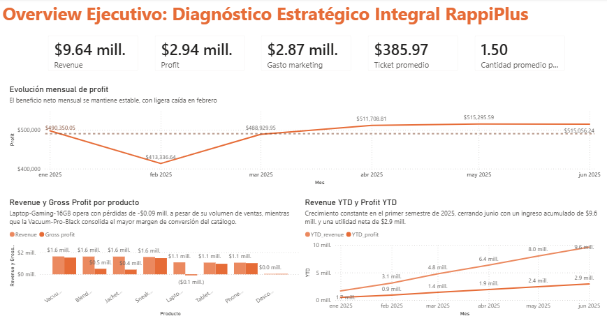

RappiPlus: From Data to Business Decisions
An end-to-end analysis of profitability, conversion funnel, cohort retention and a checkout redesign A/B test.
Found $2.94M in net profit and pinpointed payment info as the main funnel bottleneck (86.71% conversion).
Python, SQL (PostgreSQL), Power BI, statsmodels
View project